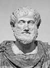

1511 yılında İtalyan ressam Rafael (1483-1520) Roma’da “Atina Okulu” adı verilen büyük bir duvar resmi yaptı. Düzinelerce ünlü Antik Yunan filozofunu resmeden eserin merkezinde iki ünlü tarihi kişilik durmaktadır: Platon (MÖ 429-347) ve onun en parlak öğrencisi Aristo (MÖ 384-322).
Ünlü duvar resmi Vatikan’a yerleştirildi. Bu durum iki düşünürün Batı düşünce geleneğinde oynadığı merkezi rolü sembolize etmektedir. Öğretmeni ile birlikte Aristo, tarihin en etkili filozofları arasında kabul edilmektedir.
Aristo Kuzey Yunanistan’daki bir köy olan Stagira’da dünyaya geldi. Babası Nichomachus, Makedonya kraliyet ailesinin doktoruydu. Aristo’nun kendisi de tıp eğitimi almıştı. Ne var ki MÖ 367 yılında Atina’ya gitti ve Plato’nun Akademisi’nde çalışmaya başladı. Burada yaklaşık olarak yirmi yıl boyunca kalacaktı.

Aristo, yazılı eserlerinin büyük bölümünü Atina’da tamamladı. Bunlardan yaklaşık olarak otuz tanesi günümüze kadar ulaşmıştır. Çalışmaları biyoloji, fizik, ahlak ve siyaset teorisi gibi çok çeşitli alanları kapsamaktadır. Platon’dan etkilenmiş olmasına rağmen bazı felsefi meselelerde ondan farklı düşmüştür. Aristo, öğretmeninin ölümünün ardından Atina’yı terk etmiştir.
Makedonya’ya dönen Aristo, kralın on üç yaşındaki oğlu Büyük İskender’e (MÖ 356-323) hocalık yapmaya başlar. Aristo genç prense retorik, edebiyat, bilim ve felsefe dersleri verir. İskender kral olup Atina’yı fethedince Aristo şehre döner ve kendi okulunu kurar.
Aristo’nun ilk formel mantık sistemini kurarak batı felsefesinin temellerini attığı düşünülmektedir. Aynı zamanda biyoloji alanında da çeşitli yenilikler yapmıştır. Metafizikle ilgili yazıları, Orta Çağ Avrupa’sında yeniden keşfedildiğinde Aquinalı Thomas (1225-1274) gibi Hıristiyan teologlar üzerinde önemli bir etki yapmıştır.
İskender’in ölümünün ardından Atina, Makedonya egemenliğine isyan etmiştir. Bu dönemde Makedonya ile olan sıkı ilişkileri nedeniyle Aristo’nun hayatı tehlikeye girmiş ve bu yüzden şehirden ayrılmıştır. Eğriboz Adası’na gitmiş ve kısa bir süre sonra orada hayatını kaybetmiştir.
Ek Bilgiler
1- Aristo her şeyden üstün olan bir varlığın mevcudiyetine ilişkin bir kanıt ortaya atmıştır. “Hareketsiz devindirici teorisi” olarak bilinen bu düşünceye göre evrendeki her olay başka olayların sonucunda ortaya çıkmaktadır. Ama bu eylemler zincirinin bir yerde başlamış olması gerekmektedir. Bu başlangıç noktası, Aristo’nun hareketsiz devindirici olarak adlandırdığı kuvvettir. Bu düşünce daha sonraları Hıristiyan yazarlar tarafından tanrının varlığının mantıksal bir delili olarak kabul edilecektir.
2- Antik tarihçi Plutarch’a (46-120) göre Büyük İskender’in en çok sevdiği kitap ona Aristo’nun hediye ettiği İlyada’ydı. Askeri faaliyetleri sırasında her zaman bu kitabı yanında taşırdı.
3- Aristo, Pythias adlı bir kadınla evlendi. Bu kadın bir arkadaşının evlatlığı (belki de yeğeni) ve Platon’un öğrencisiydi. Çiftin yine Pythias adında bir kızları oldu.